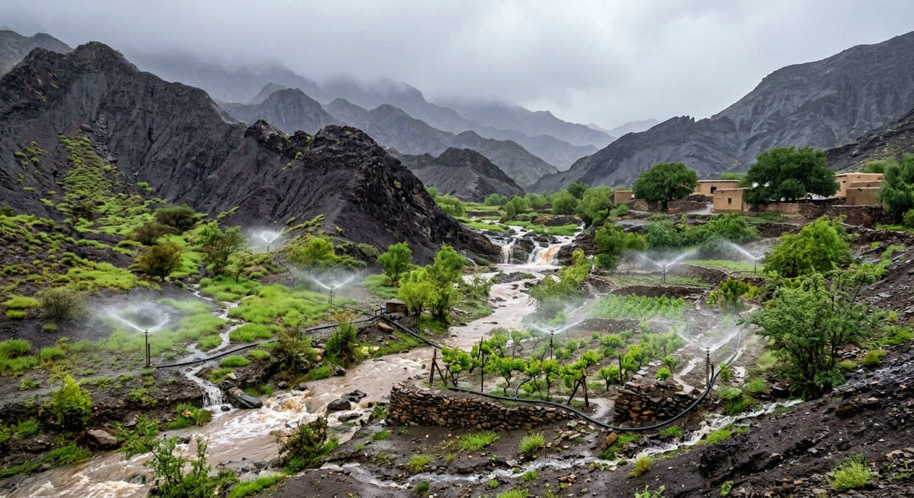

HTML5
Semantic page structure
HELLO, I'M
I build modern, responsive, and user-friendly web experiences. I enjoy turning ideas into clean interfaces and learning by creating practical projects.
Front-End Developer
CURIOUS BY NATURE. BUILDER BY CHOICE.
ALWAYS LEARNING · ALWAYS BUILDING
01 / ABOUT
I'm a BS Information Technology student at the University of Balochistan, Quetta, with a strong interest in front-end development.
I enjoy creating websites that are easy to use, look good on different screen sizes, and solve real problems. I keep improving my skills through coursework, experimentation, and hands-on projects.
02 / TOOLKIT
The technologies and tools I use in my learning and projects.
Semantic page structure
Layouts, styling & responsive design
Interactive web experiences
Version control basics
Code hosting & collaboration
Mobile-friendly interfaces
Expanding my understanding of security concepts alongside front-end development.
03 / SELECTED WORK
A mix of software development and a real-world idea currently in progress.
An offline attendance solution that identifies students using face recognition and records attendance automatically, without requiring an internet connection.

A sensor-based irrigation concept for mountain tree planting. Soil moisture sensors can trigger a nearby water valve and motor when the soil becomes dry, then stop watering when enough moisture is reached.
04 / EDUCATION
University of Balochistan, Quetta
BEYOND THE SCREEN
I enjoy hiking in the mountains around Turbat and exploring nature. I'm also interested in planting trees, supporting forest growth, and helping provide drinking water for animals in mountainous areas.
05 / CONTACT
Thank you for visiting my portfolio. Feel free to connect with me or explore my work on GitHub.